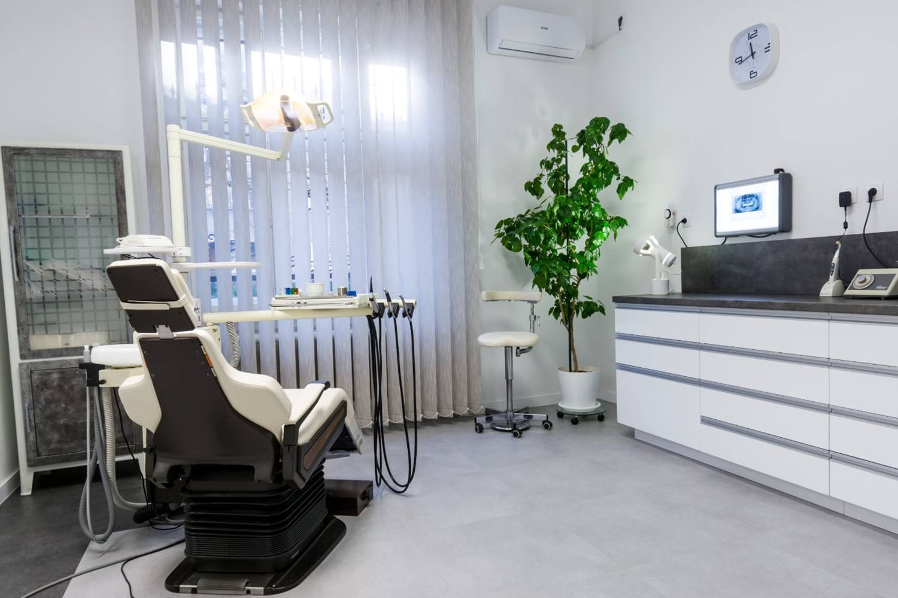
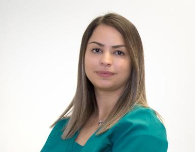
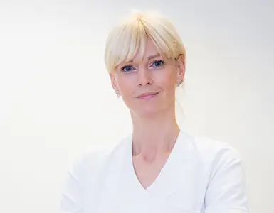
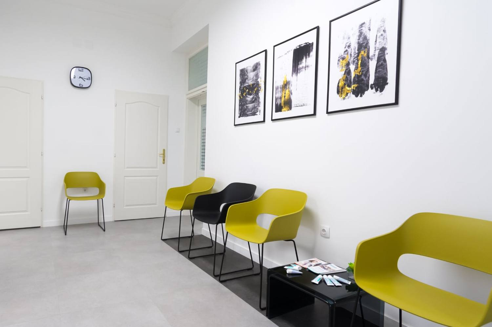
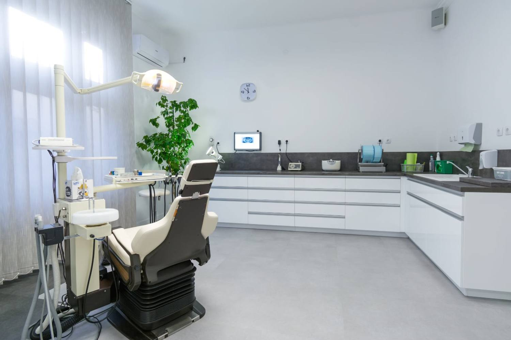
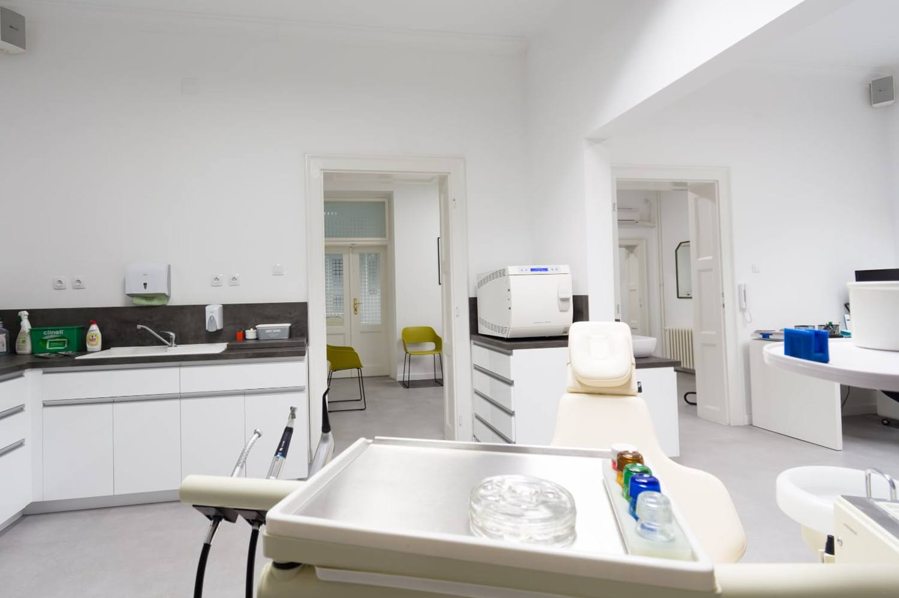
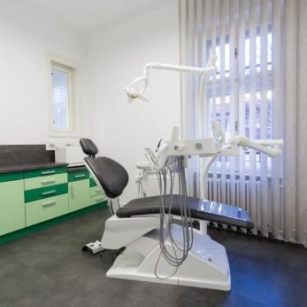

01
Bolesti zuba
Lečenje karijesa i kanala korena, sa kontrolom na rendgenu.

Od 1991. u Novom Sadu: restaurativna stomatologija i parodontologija, a danas i oralna hirurgija sa implantologijom — u novom prostoru i sa novom generacijom stomatologa.
Od lečenja zuba i protetike do implantologije i oralne hirurgije — kod lekara koji se bavi tom oblašću.
Lečenje karijesa i kanala korena, sa kontrolom na rendgenu.
Krunice, mostovi i proteze, izrađene po otisku i probi.
Ugradnja implantata i planiranje na snimku pre intervencije.
Nadoknada celog niza zuba na četiri ili šest implantata.
Hirurške intervencije u ordinaciji, kod oralnog hirurga.
Vađenje zuba i korena, uz procenu pre intervencije.
Uklanjanje umnjaka, uključujući slučajeve sa impakcijom.
Hirurško lečenje promena na vrhu korena zuba.
Korekcija frenuluma usne ili jezika.
Lečenje desni i potpornog tkiva zuba.
Lekari koji vode lečenje od prvog pregleda do kontrole.


Prostor u kojem radimo.




Radno vreme: ponedeljak–petak, 13–19h. Termin se zakazuje telefonom.
Maksima Gorkog 27, 21000 Novi Sad
Nalazimo se u Maksima Gorkog 27. Za prvi dolazak dovoljan je telefonski poziv u radno vreme.
Otvori mapu